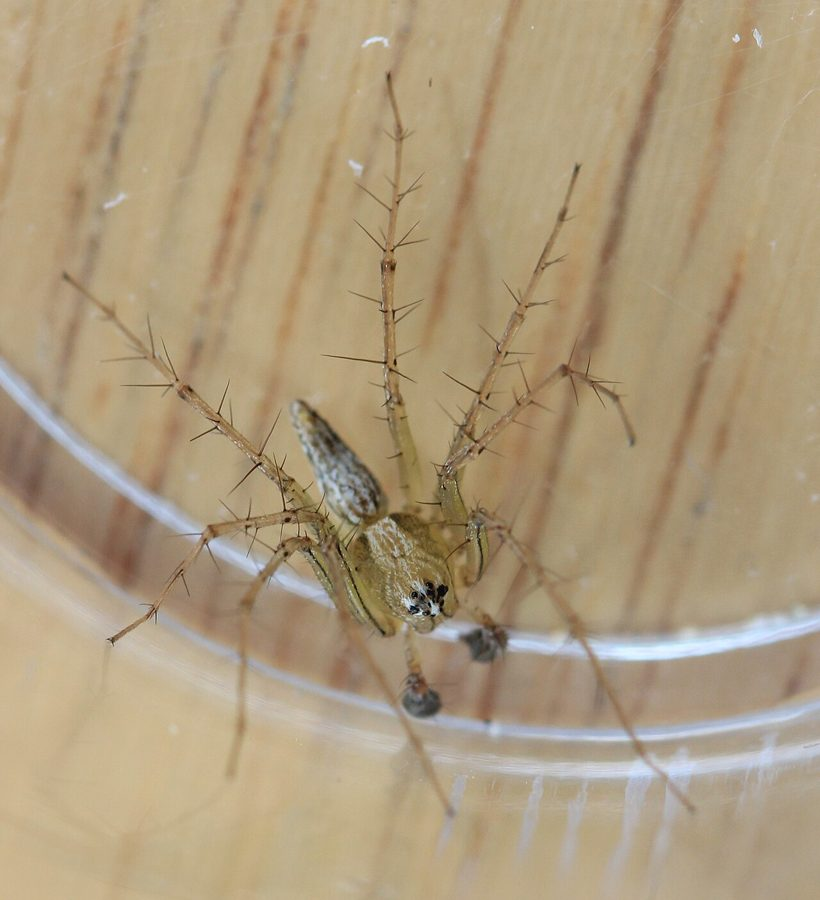

शिकारी मकड़ीStriped Lynx Spider
Oxyopes salticus · Oxyopidae · SPD-0008

- Scientific name
- Oxyopes salticus Hentz, 1845
- Family
- Oxyopidae
- Hindi
- शिकारी मकड़ी
- Status here
- native
- IUCN
- not evaluated
When to look कब देखें
Expected mainly in March, April, May, June, July, August, September, October, November.
शिकारी मकड़ी / Striped Lynx Spider
Oxyopes salticus Hentz, 1845 — Oxyopidae
शिकारी मकड़ी (स्ट्राइप्ड लिंक्स स्पाइडर) — खेतों की फसलों और बगीचों की पत्तियों पर पाई जाने वाली एक अत्यंत सक्रिय शिकारी मकड़ी है। यह कोई जाला नहीं बुनती; इसके बजाय, यह बिल्ली या लिंक्स (lynx) की तरह पत्तियों पर घात लगाकर बैठती है और शिकार को देखते ही उस पर छलांग लगा देती है। इसके शरीर का रंग हल्का पीला या मलाईदार होता है, जिस पर गहरे भूरे रंग की समानांतर खड़ी धारियां (longitudinal stripes) होती हैं। इसके पैर लंबे होते हैं जिन पर काले रंग के तीखे कांटे (prominent spines) होते हैं, जो इसे पत्तियों को पकड़ने और शिकार को जकड़ने में मदद करते हैं। यह धान, सब्जियों और कपास की फसलों में कीटों (जैसे जैसिड, थ्रिप्स और छोटे कैटरपिलर) को खाने वाली एक अत्यंत महत्वपूर्ण मित्र-कीट (agricultural ally) है। यह इंसानों के लिए पूरी तरह से हानिरहित है।
Quick Identification त्वरित पहचान
| Feature | Description |
|---|---|
| Form | Slender body; cephalothorax is high and narrow; abdomen is tapered at the rear (pencil-shaped) |
| Colour | Pale yellow, cream, or light tan ground colour; cephalothorax features 2–4 dark brown longitudinal lines |
| Abdomen | Marked with a dark central stripe bordered by pale stripes, running from front to back |
| Legs | Very long, pale yellow, carrying prominent, long, black spines projecting at right angles |
| Eyes | Eight eyes arranged in a hexagonal pattern on a high head; provides excellent vision |
| Behaviour | Active runner and jumper on foliage; runs in short, rapid bursts; does not build prey webs |
Field tip: Look closely at the upper leaves of garden plants or crop stalks. If you see a small, pale yellow spider with long legs covered in black needles running rapidly across leaves, it is a Striped Lynx Spider.
Morphology आकारिकी
Biometrics (typical measurements for adult specimens in agricultural zones of Basti):
| Measurement | Range |
|---|---|
| Body length (female) | 5.5–7.0 mm |
| Body length (male) | 4.0–5.5 mm |
| Leg span | 10–14 mm |
Cephalothorax: High, narrow, and slopes downward at the rear. The eyes are arranged in a compact hexagon: two small eyes at the front, followed by two large principal eyes, and four lateral eyes. This hexagonal arrangement is a characteristic feature of the family Oxyopidae. Two dark brown lines run down the face from the eyes to the chelicerae.
Abdomen: Elongated and tapered toward the spinnerets. The dorsal surface features a prominent dark brown or greenish-brown central stripe, flanked by cream or pale yellow longitudinal bands.
Legs: Long, thin, and pale yellow. They are covered in long, stiff, black spines that project outward. These spines act as a basket to capture prey during jumps.
Behaviour & Ecology व्यवहार और पारिस्थितिकी
Foliage stalker and jumper.
- Hunting strategy: Active diurnal predator. It sits exposed on the upper surface of leaves or flower buds. When a small insect lands nearby, the spider slowly stalks it, using its keen eyesight to judge the distance, and then leaps onto the insect from a distance of several centimetres.
- Silk use: Although it does not build webs to trap prey, it uses silk to construct safety draglines before jumping and to spin egg cocoons.
- High mobility: Runs in rapid, erratic bursts across leaves, jumping easily from one leaf to another when disturbed.
Ecological Role पारिस्थितिक भूमिका
Agricultural pest controller. The Striped Lynx Spider is one of the most economically valuable predators in agricultural fields. It is a generalist predator that feeds on a wide range of crop pests, including leafhoppers, aphids, plant bugs, thrips, and early-instar caterpillars (such as cotton bollworm larvae). Its high abundance in crop canopies makes it a key biological control agent in integrated pest management.
Life Cycle / Phenology जीवन चक्र
- Active season: Active throughout the warm farming season (March–November), with populations peaking in the late monsoon (September–October).
- Mating: Mating occurs in spring and early monsoon. The male performs a leg-waving display, approaching the female cautiously to avoid predation.
- Egg guarding: The female spins a flat, disc-shaped, light green or white silk egg cocoon (containing 30–60 eggs), which she attaches to the underside of a leaf. She stands directly over the egg sac to guard it from parasitic wasps, remaining there without feeding until the eggs hatch.
- Hatching: The spiderlings hatch in 15–20 days and disperse by ballooning.
Host Plants or Prey आहार
Insectivorous diet (pursuit hunting):
- Crop pests: Aphids, leafhoppers, whiteflies, thrips, and small moth larvae (caterpillars).
- Other insects: Mosquitoes, small flies, and tiny beetles.
Predators / Natural Enemies शत्रु
- Birds: Insectivorous birds like the Ashy Prinia (
[BRD-0001]) and Tailorbird ([BRD-0015]) hunt them on plant stems. - Parasitoid wasps: Small Ichneumonid wasps target and parasitise their guarded egg sacs.
- Larger spiders: Web-building spiders and jumping spiders (
[SPD-0003]) prey on them.
Agricultural / Human Relevance कृषि प्रासंगिकता
Farmer's ally — pesticide sensitivity.
- Biological control: In Basti's paddy and vegetable fields, a healthy population of lynx spiders significantly reduces the need for chemical insecticides, saving costs for farmers.
- Pesticide impact: Lynx spiders are highly sensitive to broad-spectrum chemical insecticides (such as pyrethroids and organophosphates). Spraying crops collapses their population, often leading to secondary outbreaks of pest insects that recover faster than the spiders. Protect these spiders by avoiding chemical sprays.
- Safety: Harmless to humans. They cannot bite human skin, and their venom is only toxic to insects.
Expected Locally स्थानीय रूप से अपेक्षित
Not a field record. Written from published accounts for eastern Uttar Pradesh. No confirmed local sighting yet — if you have seen it, that is what the atlas needs.
अभी तक स्थानीय पुष्टि नहीं। यह विवरण प्रकाशित स्रोतों से है, किसी अवलोकन से नहीं।
Commonly found in the standing rice fields (dhan ke khet) and vegetable patches (especially on okra and cowpea plants) across Harraiya and Basti blocks during July–October. They are frequently seen sitting on the tips of leaves in bright sunlight.
Distribution वितरण
Global range: Widespread across the Americas and Asia, including South Asia (India, Bangladesh, Pakistan). One of the most common foliage-dwelling spiders in tropical agricultural systems.
In India: Found in all agricultural states, particularly abundant in cotton and rice-growing plains.
In Uttar Pradesh: Common resident in all farming plains.
In Basti district / eastern UP: Abundant resident in all rural block crop canopies.
Research Questions शोध प्रश्न
- How does the population density of Oxyopes salticus vary between organic rice fields and pesticide-sprayed fields in Basti? / बस्ती में जैविक धान के खेतों और रासायनिक छिड़काव वाले खेतों में शिकारी मकड़ी की संख्या में क्या अंतर है?
- What is the daily consumption rate of aphids by Oxyopes salticus on local okra crops? / भिंडी की फसल पर यह मकड़ी प्रतिदिन औसतन कितने चेपा (aphids) का शिकार करती है?
- Does the presence of long spines on the legs of Oxyopes salticus prevent ants from attacking the spider while guarding its egg sac?
- Does Oxyopes salticus exhibit host-plant preference based on leaf shape or prey availability in local kitchen gardens?
- Can children find and photograph the hexagonal eye arrangement of a lynx spider using a simple mobile macro-lens? — An engaging photography and biology activity.
Similar Species मिलती-जुलती प्रजातियाँ
| Species | Key Difference |
|---|---|
| Oxyopes javanus (Java Lynx Spider) | Slightly larger (8–10 mm); body is darker brown; facial lines are much bolder and run straight down the jaws; common in forest margins. |
| Peucetia viridans (Green Lynx Spider) | Much larger (15–20 mm); body is bright green with red spots; legs are green with black spots; found on wild weeds like Calotropis ([FLR-0002]). |
Plexippus paykulli (Pantropical Jumping Spider [SPD-0003]) | Cephalothorax is wider and box-like; lacks the long leg spines; leaps on walls rather than grass foliage; has giant front eyes. |
Taxonomy & Classification वर्गीकरण
Original description. Nicholas Marcellus Hentz described the Striped Lynx Spider as Oxyopes salticus in 1845 in the Journal of the Boston Society of Natural History (Vol. 5, p. 196). The type locality was North America. The genus name Oxyopes is derived from the Greek oxys (sharp) and ops (eye), referring to their keen vision. The specific name salticus is Latin for "leaping" or "jumping," describing their active hunting style.
Subspecies. Monotypic — no subspecies are currently recognised.
Family and order placement. Placed in the order Araneae, suborder Araneomorphae, family Oxyopidae. Oxyopidae contains all lynx spiders.
Phylogenetic notes. Lynx spiders belong to the superfamily Lycosoidea (wolf spiders and allies). They have evolved specialized foliage-dwelling habits and high visual acuity, representing an ecological transition from ground-dwelling hunters to canopy predators.
IUCN status rationale. Not evaluated (NE) by the IUCN Red List. As an abundant and widely distributed species in agricultural ecosystems, it faces no conservation threats.
Photo Gallery फोटो गैलरी
References संदर्भ
- Hentz, N. M. (1845). Descriptions and figures of the araneides of the United States. Journal of the Boston Society of Natural History, 5, 115–185. [original description]
- Pocock, R. I. (1900). The Fauna of British India, including Ceylon and Burma. Arachnida. Taylor & Francis, London.
- Tikader, B. K. (1970). Spider fauna of Sikkim. Records of the Zoological Survey of India, 64, 1–84.
- Brady, A. R. (1964). The lynx spiders of North America, north of Mexico (Araneae: Oxyopidae). Bulletin of the Museum of Comparative Zoology, 131, 429–518.
- Zoological Survey of India. State Fauna Series: Fauna of Uttar Pradesh — Araneae. ZSI, Kolkata.
- GBIF Occurrence Data — Oxyopes salticus (2026). GBIF taxon key: 2178718.
Source file: species/fauna/spiders/striped_lynx_spider.md